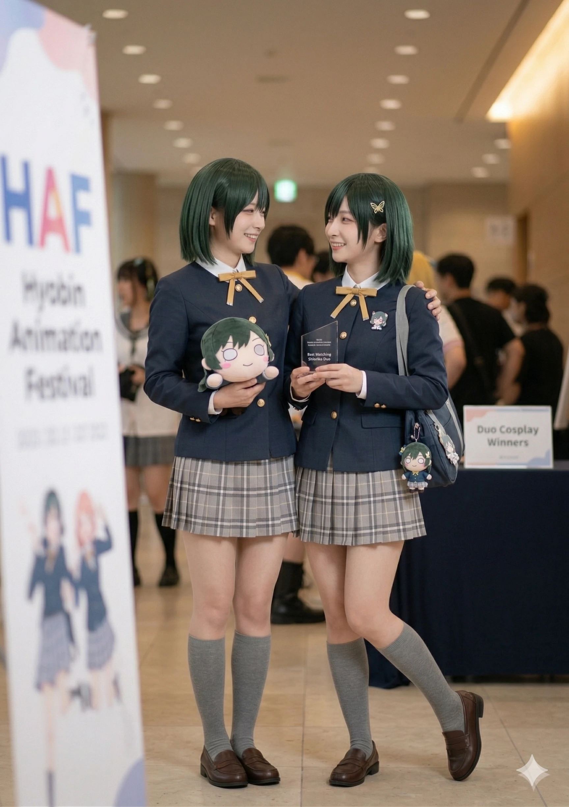
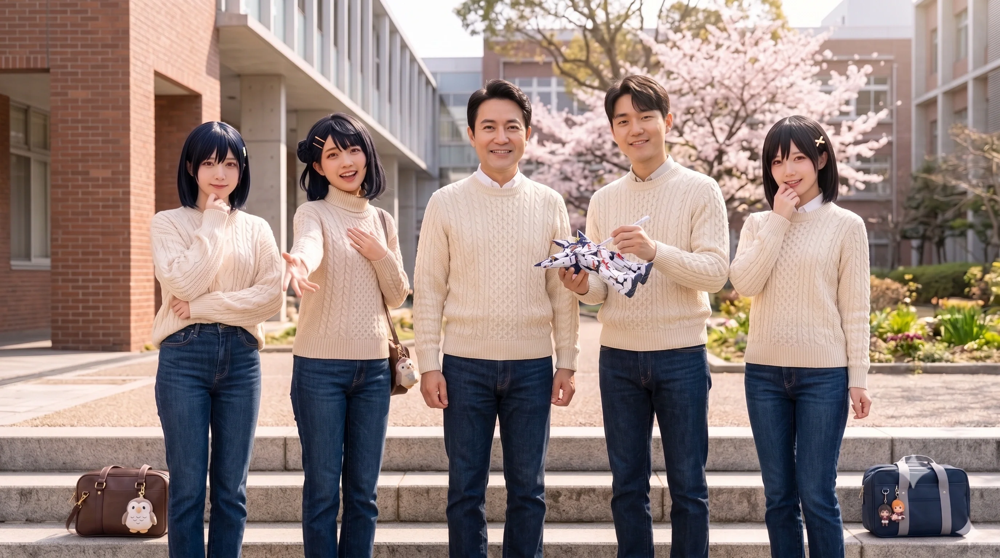

"외모는 현역 고등학생인데 성격은 철혈의 학생회장. 효빈시 서브컬처계와 정치계의 숨은 지배자."
"적당히는 없습니다. 비효율적인 논리는 기각합니다."
효빈광역시 중구·동구의 국회의원 김성민의 배우자. 효빈시 '덕후 명문가'의 실질적인 수장이자, 대한민국 정치판을 통틀어 가장 압도적인 비주얼 쇼크를 선사한 전설적인 인물이다.
1976년생으로 2026년 현재 만 50세임에도 불구하고, 10대 후반에서 20대 초반으로밖에 보이지 않는 기적의 동안을 자랑한다. 1990년대 대학 만화 동아리 'VISUAL' 시절 남편과 키보드 배틀을 뜨다 눈이 맞은 서사부터 시작해, 30년 덕력의 소유자로 남편과 후배인 박효빈 시장을 배후에서 조련(?)하고 있다. 단순한 정치인의 아내가 아니라, 효율성을 따지는 철저한 원칙주의자로서 효빈시 서브컬처 문화와 행정의 실질적 검수자 역할을 수행 중이다.
그녀의 외모는 효빈시 최대의 미스터리이자, 틈만 나면 "나잇값 못한다"며 시비를 거는 정적들을 한 방에 침묵시키는 가장 강력한 물리적 무기이다.
150cm대 초반의 아담한 체구를 가졌다. 작은 체구 덕분에 웬만한 캐릭터 의상이 위화감 없이 소화되며 특유의 동안 속성과 학생회장 이미지를 극대화한다. 겉보기와 달리 화가 나면 180cm인 김성민 의원조차 깨갱하게 만들 정도의 카리스마를 뿜어낸다. 주민우가 선거 유세 현장에서 그녀의 아담한 키와 비주얼만 보고 아동 학대 운운하며 무리수를 던진 것은 이 치명적인 시각적 착각 때문이었다.
이 여사는 러브라이버의 국룰에 따라 각 시리즈별로 오시를 정교하게 설계하여 자신의 내면과 외면을 완벽히 분리해 관리한다. 이는 효빈시 행정과 정치의 역학 관계에까지 영향을 미친다.
| 시리즈 | 오시 캐릭터 | 선정 이유 및 현실 반영 특징 |
|---|---|---|
| μ's (뮤즈) | 아야세 에리 | 이 여사의 완벽주의와 FM 성격의 근간. 김성민 의원이 연애 시절 반했던 '하라쇼'한 리더십. 박효빈 시장(에리 오시)과는 이를 매개로 '하라쇼 동맹'을 맺고 있다. |
| Aqours (아쿠아) | 쿠로사와 다이아 | 엄격한 규율 중시. 남편 의원실의 보고서에서 오탈자나 통계 오류를 용납하지 않는 칼 같은 태도의 근원이다. 툭하면 "뿌뿌데스와!"를 외친다는 후문. |
| Nijigasaki (니지동) | 미후네 시오리코 | 대외적 페르소나의 완성. 단정한 흑발 단발과 서늘한 분위기까지 완벽한 실사판이다. 비효율적인 예산안을 반려하는 효빈시의 실질적인 '철혈 학생회장'. 팬덤에서는 '한선츄'로 불린다. |
평소엔 시오리코처럼 차갑고 이성적인 그녀지만, 마음속 깊은 곳에는 본능의 폭주 버튼인 시부야 카논 (Liella!)이 자리 잡고 있다.
2023년 베르데 홀에서 윤재훈 일당이 카논이 센터인 리엘라 래핑 버스와 등신대에 오물을 던지려 했다는 뉴스를 보았을 때, 평소의 품위는 온데간데없이 사라졌다. 그녀는 비공식 안가에서 "윤재훈... 그 멍청한 [검열삭제] 새끼... 감히 우리 카논 쨩 버스에 똥을 던지려 해? 네놈은 효율성 따위 따질 가치도 없는 쓰레기구나"라며 차진 육두문자를 내뱉었다. 이를 엿들은 박효빈 시장은 사모님이 제일 무서운 리엘라 강성 팬임을 깨닫고 영원히 카논 굿즈 앞에서는 조심하게 되었다는 후문이다.
2022년 지방선거를 앞두고, 남편 김성민이 무난하게 당선이 유력했던 시장 3선 도전을 포기하고 임기를 불과 몇 달 앞둔 시점에 중구·동구 국회의원 재보궐선거에 구원투수로 출마하겠다고 선언했을 때의 일화다. 처음 남편의 폭탄선언을 들은 이 여사는 "당신 미쳤어?! 임기 다 끝나가는데 지금 사퇴하면 정치적으로 완전 매장당할 수도 있다고요!"라며 찰진 등짝 스매싱(?)을 연속으로 시전했다고 한다. 철저한 효율성과 완벽을 추구하는 그녀의 입장에서, 남편의 험지 출마는 그야말로 계산이 전혀 안 서는 미친 짓이었기 때문이다.
하지만 김성민이 "내가 가지 않으면 300만 시민의 자존심이 윤대환의 망령(주민우)에게 다시 유린당한다"며 똥고집을 부리자, 결국 못 이기는 척 남편의 뜻을 전적으로 수용했다. 이후 선거 운동 기간 내내 남편을 대신해 전통시장을 돌며 "임기를 다 마치지 못해 시민분들께 정말 죄송합니다. 국회에서 효빈을 위해 배로 갚겠습니다"라며 90도로 사과하고 다녔고, 이 여사의 이 진정성 있는 헌신적 내조 덕분에 성난 원도심 민심이 압도적 지지로 돌아섰다. (훗날 김 의원은 "그때 맞은 등짝이 아직도 얼얼하다"며 아내의 찰진 스매싱 파워를 회고했다.)
과거 남편 김성민이 시장으로 재임하던 시절, 시의 재정을 아끼고 공직자로서 솔선수범하겠다며 본인 스스로 시장 봉급의 일부를 자진 반납(수령 거부)하겠다는 폭탄선언을 한 적이 있다. 보통의 가정이라면 남편의 이런 독단적이고 이상주의적인 짓(?)은 부부싸움 1순위 안건이 되겠지만, 이 여사의 반응은 지역 정가를 경악하게 만들었다.
이 여사는 주변의 만류에도 불구하고 "뭐, 봉급 일부 안 받는다고 해서 우리가 당장 밥 굶고 길바닥에 나앉는 것도 아니잖아요? 그거 제외해도 사는 데에는 지장 없습니다. 본인이 효빈시를 위해 그렇게 하고 싶다는데 냅둬야죠."라며 대수롭지 않게 쿨하게 넘겨버렸다. 돈이나 체면보다 본인들의 신념을 중시하는, 진정한 오타쿠 명문가의 철혈 사모님다운 대인배적 면모였다. (이때 남편 김성민은 평생 이 여사에게 충성을 맹세했다고 한다.)
평소 남편의 의원실 예산안이나 박효빈 시장의 L-Project 기획안을 검토할 때면 완벽하게 자신의 오시인 미후네 시오리코에 빙의한다. 빨간펜을 들고 서류를 넘기며 "이 예산 배정은 비효율적이네요. 결재하기에는 부적합합니다."라고 서늘하게 말하는 모습은 시청 공무원들과 보좌관들의 오금을 저리게 만든다.
하지만 철혈의 학생회장처럼 완벽해 보이는 그녀에게도 허술하고 귀여운 '한선츄' 모먼트가 있다. 어느 날 남편 김성민 의원이 결혼기념일 선물로 몰래 한정판 '시오리코 네소베리'를 직구해서 선물하자, 혼자 방에서 네소베리를 껴안고 "적당히는 없다구요~ 에헤헷" 하며 뒹굴거리는 모습이 장녀 김시안에게 발각된 적이 있다. 이 사건 이후 가족들 사이에서 그녀의 권위가 살짝 흔들렸지만, 곧바로 "방문을 함부로 여는 것은 사생활 침해입니다"라며 철혈 모드로 입막음을 시전했다고 한다.
2016년 김성민 시장이 효빈교통공사를 분사시킬 당시, 밥그릇을 뺏기게 된 효빈도시공사 사장 소홍문은 김 시장을 흔들기 위해 악의적인 가짜 뉴스를 유포했다. 그중 하나가 바로 이 여사를 타겟으로 한 "시장 부인이 시 예산을 빼돌려 고가의 사치품을 무단으로 사들이고 있다"는 찌라시였다.
하지만 그들이 간과한 것은, 이 여사가 구매한 이른바 '사치품'의 정체가 다름 아닌 일본 란티스(Lantis)에서 직구한 러브라이브 한정판 굿즈와 블루레이 세트였다는 점이다. 분노한 이 여사는 공무원 시절부터 본인이 합법적으로 모아둔 사비 통장 내역과 관세 납부 영수증을 1원 단위까지 엑셀로 정리하여 선관위와 언론에 냅다 던져버렸다. "내 덕질 자금은 철저한 효율성 아래 통제되고 있습니다. 증빙 없는 헛소리는 기각합니다."라는 서늘한 코멘트와 함께 역풍을 맞은 소홍문은, 오타쿠의 순정을 건드린 죄로 비참하게 몰락하고 말았다.
효빈시 정치사를 뒤흔든 가장 통쾌한 팩트 폭격 사건. 2022년 재보궐선거 유세에서 주민우 후보가 이 여사의 아담한 키와 비주얼만 보고 "김성민은 미성년자와 함께 사는 아동 성애자냐!"라는 망언을 던졌다.
참다못한 이 여사는 선거 사무소 앞에 등판해 "제가 그렇게 어려 보이나요? 감사합니다."라는 시오리코식 미소와 함께 주머니에서 '76'으로 시작하는 국가 공인 주민등록증을 냅다 까버렸다. 카메라 셔터 소리만 들릴 정도로 정적이 흘렀고, 주민우는 사과문에 "그렇게 어려 보일 줄 몰랐다"는 4차원 문구를 적었다가 전국적 조롱거리가 되며 득표율 16%로 강제 정계 은퇴를 당했다.

2002년생 장녀인 김시안 양과 함께 완벽하게 똑같은 '미후네 시오리코' 교복 코스프레를 하고 HAF(Hyobin Animation Festival)에 출전해 'Best Matching Shioriko Duo' 우승 트로피를 거머쥐었다. 26살의 나이 차이가 무색하게 누가 엄마고 누가 딸인지 구분이 불가능한 도플갱어급 싱크로율로, 심사위원들은 서류를 확인하기 전까지 쌍둥이 자매인 줄 알았다고 한다.
2026년, 윤재훈이 박효빈 시장이 10개월간 월드비전에 정기 후원한 것을 "사전선거운동 표 매수"라며 선관위에 고발하는 만행을 저질렀다. 박 시장이 대학 시절 월드비전의 수혜자였다는 사실을 바탕으로 한 '보은의 익명 기부'였음에도 억지를 부린 것이다.
선관위가 이를 합법적 자선으로 기각하자, 이 여사는 "자선 단체에 기부하는 정당한 행위를 프레임으로 엮으려는 저열한 짓이다. 가난을 조롱하고 배고픈 서러움을 모르는 자가, 아이들의 밥그릇에 들어가는 후원금마저 끊으려 든다. 법전은 니들 생떼 쓰라고 있는 장식품이 아니다!"라며 윤재훈의 얄팍한 논리를 가루가 되도록 비판했다.
정적 주민우의 장녀 주민지가 아들 김시율에게 저지른 만행이 수면 위로 드러났을 때, 이들 부부가 번갈아 가며 이성의 끈을 놓았던 일화는 효빈 정가에서 전설로 통한다.
평소 어떤 정치적 위기에도 [미후네 시오리코] 특유의 단정하고 차가운 이성을 유지하던 이한선 여사가, 과거 최애인 [시부야 카논] 굿즈 테러 사건 때 이상으로 냉정이고 나발이고 이성의 끈을 완전히 놓아버리며 살벌한 육두문자(쌍욕)와 함께 부패 관료의 가문을 경제적·법적으로 박살 내버린 전설적인 사건이다. 이 사건은 2022년 6월 윤재훈의 효빈대 베르데 홀 난입 및 '메카쿠시테' 사건 직후 터져 나온 '시청 문화예술과 배 모 팀장(56세, 5급 사무관)의 시정 사보타주 및 당시 고3 수험생이던 차녀 김시연 협박죄 보복 고소(무고죄) 게이트'로 기록되어 있다.
2022년 6월, 효빈대학교 베르데 홀에서는 효빈시 공식 예산 지원 및 초청대행사 주관으로 『니지가사키 학원 스쿨 아이돌 동호회』 성우 마에다 카오리(오사카 시즈쿠 역)와 사가라 마유(나카스 카스미 역)의 내한 토크쇼가 열렸다. 그런데 총선에서 5.2%로 낙선한 윤재훈과 추종자 A씨(부동산학과)가 교내 트램 선로에 뛰어들어 급제동 참사 위기를 일으킨 뒤, 행사장 내부까지 난입해 등신대를 부수려 돌진했다. 당시 현장의 박효빈 시장과 학생들, 그리고 현장에 함께 있던 이한선 여사와 팬덤은 일제히 일본어로 "메카쿠시테(目隠して / 눈 가려)!!"라고 외치며 거대한 '인간 벽'을 구축해 성우들의 시야를 차단했다.
그러나... 실제로 마에다 카오리(카오링)와 사가라 마유(마유치) 두 사람을 영접해 본 이한선 여사와 박효빈 시장 등 성덕들 사이에서는 이 '메카쿠시테'를 외친 진짜 이유가 전혀 달랐다는 것이 정설이다(...).
이한선 여사 & 현장 팬덤의 속마음: "지금 성우님들이 놀라실까 봐 눈을 가리는 게 아닙니다! 저 두 사람은 애니 캐릭터들끼리처럼 실제로도 절친한 데다 서브컬처계 최강의 똘끼(?)와 털털함을 자랑하는 광기 듀오란 말입니다! 저 둘이 난동범과 눈이 마주치면 그 자리에서 마이크를 잡고 윤재훈을 뼈도 못 추리게 신랄하게 극딜 박아서 한일 외교 참사 겸 국제 망신이 터집니다! 비효율적인 외교 마찰을 막고 난동범 목숨을 살려주려면 당장 눈부터 가리고 마이크 전원을 내려야 합니다!!"
마에다 카오리 (귀국 후 개인 유튜브 하이볼 술먹방 라방 中): "아하하! 여러분, 한국 효빈시 이벤트 때 그 뉴스 보셨어요? 솔직히 말해도 돼? 나 그때 스태프분들이랑 팬분들이 '메카쿠시테!' 외치면서 눈 가려주셨는데, 손가락 틈새로 그 이상한 아저씨들이 바닥에 구르면서 '으아악 살려주세요!' 하고 비명 지르는 거 다 봤거든?! (폭소) 솔직히 나 안 막아주셨으면 마이크 들고 '하아?! 어이, 저 아저씨 술 덜 깼어?! 확 한 대 날려버릴라(お前、ぶっ飛ばすぞ)!!' 하면서 무대 밑으로 뛰어내려 갈 뻔했잖아! 매니저 씨가 필사적으로 말려서 참았지! 근데 그때 1초 만에 거대한 인간 벽을 착! 하고 만들어주신 젊은 시장님(박효빈)이랑 시오리코 쨩을 빼닮은 엄청 미인 사모님(이한선), 그리고 한국 러브라이버분들의 피지컬과 단합력은 진짜 액션 영화 어벤져스 같았어요! 한국 팬덤의 위력은 진짜 세계 제일이야!! 건배~!!"
사가라 마유 (귀국 후 개인 유튜브 잡담 생방 中): "맞아요~ 카오링이랑 대기실에서 얘기하면서 얼마나 웃었는지 몰라요! 눈은 가렸는데 귀로는 그 난동범 아저씨들이 근육질 팬분들이랑 교수님한테 잡혀서 '팔 꺾여요! 잘못했어요!' 하고 찌질하게 울부짖는 소리가 돌비 서라운드로 다 들렸거든요? (특유의 카스밍 썩소) 진짜 카와이소~(불쌍해라)~ 남의 행복한 축제에 와서 저러고 인생 망치는 거 보면 참 안됐어요 그쵸? 그래도 한국 팬분들이 저희 눈에 더러운 거 안 보이게 해주시겠다고 그렇게 온몸으로 지켜주셔서 얼마나 든든하고 감동했는지 몰라요! 효빈시 최고!"
그렇다. 별명부터가 '어뮤즈의 광견'에 5도 이하의 술은 음료수 취급하는 강철 멘탈 주당 마에다 카오리와, 한국 와서 순대국밥에 새우젓을 들이붓고 마사지 썰을 아저씨처럼 풀며 포커·경마까지 섭렵한 승부사 사가라 마유의 실제 성격을 아는 팬들 입장에서는, 성우들이 상처받을까 봐가 아니라 "저 둘의 입담 봉인이 풀리면 무대 위에서 윤재훈을 사회적으로 도륙 내버려 국제적 방송사고가 난다"는 본능적 위기감 때문에 외친 긴급 재난 회피 기동이었던 것이다(...). 결과적으로 팬들의 기지 덕분에 국제 망신은 막았고, 윤재훈 일당은 성우들의 개인 유튜브 생방송에서 전 세계 오타쿠들에게 박제되어 대차게 조롱당했으며, 한국 팬덤의 위상만 하늘 끝까지 치솟게 되었다.
하지만 훈훈한 팬덤의 대처와는 별개로, 행사의 공동 주최 측이었던 효빈광역시와 초청대행사, 그리고 장소를 제공한 효빈대학교 본부는 발칵 뒤집혔다. 시속 40km로 달리는 교내 트램 선로에 윤재훈이 뛰어들어 철도운전학과 4학년 실습생이 손을 덜덜 떨며 비상제동과 모래 뿌리기(샌딩)를 다 써가며 간신히 멈춰 서는 초대형 인명 참사가 날 뻔했고, 행사장 내부까지 테러범들이 무혈입성하는 동안 정작 돈 받고 고용된 경비원들은 코빼기도 보이지 않았기 때문이다.
결국 사건 직후 시청 감사관실과 주최 측에 불려 온 경비업체 현장 경비단장은 쿠사리를 오지게 먹던 도중, 변명이랍시고 "아니, 솔직히 만화 캐릭터 성우 온다길래... 그냥 씹덕 행사라 보통 행사보다 사람이 적고 작을 줄 알고 경비 배치를 대폭 줄였는데요..."라는 희대의 망언을 내뱉어 기름을 들이부었다(...).
박효빈 시장: (현장에서 직접 인간 벽을 치고 온몸을 던졌던 장본인으로서 이성의 끈이 끊어질 듯 극대노하여 책상을 내리치며) "뭐라고요?! 씹덕 행사라 작을 줄 알고 경비를 줄여?! 여기가 어느 도시인데 그따위 안일한 소리를 지껄입니까!! 타 도시면 몰라도 여기는 서브컬처 행사에 기본 수만 명 인파가 몰리는 효빈광역시입니다! 시 예산이 지원되고 해외 귀빈이 초청된 공식 외교·문화 축제를 당신 멋대로 난도질해서 학생들과 성우님들을 죽일 뻔해놓고, 지금 그게 변명이라고 입 밖으로 나옵니까?!"
지자체에서 공식 예산을 지원해 유명 연예인이나 해외 아티스트를 초청한 행사와 완벽히 동일한 등급의 관제 행사였음에도, 과업지시서상 30명을 배치하기로 계약해 놓고 고작 8명만 세워둔 채 인건비를 빼돌린 안일한 직무유기 앞에서는 그 어떤 자비도 없었다. 박효빈 시장과 초청대행사, 그리고 이를 뒤에서 자문한 이한선 여사는 즉각 법이 허용하는 최대치의 징계와 철퇴를 내리꽂았다.
그런데 경비단장을 탈곡기처럼 털던 감사관실은 경비단장으로부터 "사실 저희도 원래 계약대로 30명을 배치하려 했는데, 효빈시청 문화예술과 배 모 팀장(56세, 지방행정사무관)이 직접 전화해서 '어차피 박효빈 그 어린놈이 하는 오타쿠 장난질 행사니 대충 경비 세워두고 남는 예산은 빼돌려라'고 지시했다"는 충격적인 자백을 받아낸다!
당시는 1996년생(당시 만 25~26세)인 박효빈 시장이 취임한 지 얼마 되지 않았던 시점이었다. 전임인 박현만, 김성민 시장 역시 당선 당시엔 전국 최연소급 광역단체장이긴 했으나 그래도 40대 초중반의 연배가 있었고 감사를 워낙 빡세게 돌렸기에, 배 팀장 같은 구태 관료들은 납작 엎드려 '능구렁이 연기'를 하며 살아남았다. 그러나 자기 아들뻘인 1996년생 박효빈 시장이 아웃라이어 수준으로 당선되자, 배 팀장은 속으로 "어린놈이 완장 차고 세금 낭비하며 나대는 꼴 못 보겠다"며 불만을 품고 고의적인 시정 사보타주(태업)를 저질렀던 것이다. 심지어 부하 주무관들이 "효빈시 서브컬처 인파 화력상 경비를 줄이면 무조건 대형 사고가 난다"며 결사반대했음에도 이를 묵살했는데, 평소 배 팀장의 갑질에 시달리던 주무관들이 이 폭언을 전부 스마트폰으로 녹취해 두었다가 특감 현장에서 그대로 터뜨려버렸다(...).
배 모 팀장 (56세, 5급 사무관): (팔짱을 끼고 다리를 덜덜 떨며 거만하게) "시장님, 솔직히 까놓고 말해서 애들 보는 만화 나부랭이 인형놀이 행사에 세금 수천만 원씩 퍼붓는 거 자체가 전시행정 아닙니까? 사람 몇 명이나 올 줄 알고요! 제가 시 예산 아끼려고 융통성 있게 경비 인원 좀 조정한 겁니다. 윤대환 시장님 때였으면 이런 건 기안도 못 올라왔어요! 내가 공무원 생활을 30년을 했는데, 나이도 어린 친구가 어쩌다 시장 완장 찼다고 어디서 선배 공무원을 범죄자 취급이야?! 내가 지시했다는 증거 있어?! 증거 있냐고!!"
최 주무관 & 정 주무관 (문화예술과 7·8급 실무진): (회의실 문을 박차고 들어와 감사관 테이블 위에 태블릿 PC와 두꺼운 비위 채증 바인더를 내려놓으며) "시장님, 감사관님. 증거 여기 다 있습니다. 저희 주무관들이 경비를 절대 줄이면 안 된다고 수차례 기안을 올렸을 때 배 팀장님이 결재판을 집어던지며 지시하신 녹취 파일 원본과, 평소 직원들에게 사적 심부름·주말 농사 동원·폭언 갑질을 일삼으신 증거, 그리고 빼돌린 경비 예산을 친인척 식당으로 유용하려 한 배임 장부입니다!"
[대회의실 스피커로 울려 퍼진 배 팀장의 실제 육성 녹취]: "야 최 주무관! 이딴 씹덕 행사에 경호비 4천만 원을 다 쓴다고? 미쳤냐? 반으로 깎아! 야, 1996년생 그 새파란 박효빈 어린놈이 시장 완장 차고 나대니까 아주 밑에 놈들까지 기고만장해졌네?! 그 어린놈 나대는 꼴을 내가 두 눈 뜨고 못 보겠다! 이런 작은 행사는 대충 노인네들 몇 명 세워두고 경비해도 돼! 내 말대로 안 줄이면 너 이번 근무평정 최하위(D) 줄 줄 알아!"
박효빈 시장: (석이 나가 머리끝까지 극대노했으나, 욕설 한마디 없이 소름 끼치도록 차갑고 냉정한 목소리로 결재 서류에 서명하며) "감사관. 지방공무원법 제73조의3에 의거하여 문화예술과 배 모 사무관을 이 시간부로 즉각 '직위해제' 조치하십시오. 인사위원회 소집해서 법정 최고 징계인 '파면(罷免)' 및 '해임' 절차를 밟으시고, 오늘 중으로 직무유기·직권남용·업무상배임 혐의로 관할 검찰청에 형사 고발장 접수하십시오."
[특감 종료 후 시장 집무실 — 비서실장과 박효빈 시장의 대화]:
천 비서실장: "시장님, 그런데 참 의아합니다. 김성민 전 시장님이나 박현만 시장님 시절에도 감사를 워낙 빡세게 돌려서 부패 공무원들을 싹 걸러내셨는데, 어째서 저 배 팀장 같은 인간이 지금까지 살아남아 있었을까요?"
박효빈 시장: (찻잔을 내려놓으며 단호하게 고개를 젓고는) "아닙니다, 실장님. 제가 김성민 선배님과 이한선 사모님을 누구보다 가까이서 뵈어 잘 알잖습니까. 아무리 유능하고 날카로운 시장이라도 수천 명에 달하는 시청 공무원들의 머릿속과 속마음까지 24시간 완벽하게 감시하는 건 신(神)이 와도 불가능합니다. 박현만·김성민 두 선배님도 당선 당시엔 최연소급 단체장이셨지만 그래도 40대 어른이셨으니, 저 배 팀장 같은 교활한 자들은 앞에서는 90도로 허리 굽히며 완벽하게 '충성하는 연기'를 하며 숨어 있었을 겁니다. 그러다 제가 만 26세 아웃라이어로 들어오니까 만만해 보여서 본색을 드러낸 것뿐이죠. 김 선배님 탓이 절대 아닙니다. 오히려 제 발로 기어 나와 꼬리를 밟혀줬으니 감사할 따름이죠."
증거가 산더미처럼 쏟아져 파면이 확정적이었음에도, 끝까지 정신을 못 차린 배 전 팀장은 시청 본청 로비 앞에서 『1996년생 어린 시장의 보복 행정 규탄! 직위해제 무효!』라는 피켓을 걸고 박효빈 시장에 대한 인신공격 시위를 벌이는 추태를 부렸다. 심지어 여의도의 김성민 의원실에까지 직접 전화를 걸어 "김성민 시장님 계실 때 제가 얼마나 충성했습니까! 저 어린놈이 저를 죽이려 하는데 의원님이 좀 말려주십시오!"라고 징징거렸다.
이 뻔뻔한 전화를 받은 남편 김성민 의원은 이마에 굵은 핏줄이 곤두서며 극대노했으나, 다짜고짜 쌍욕을 박는 대신 의원실 문을 걸어 잠그고 모니터에 자신의 분노 조절용 성물인 '요네메 메이의 올곧은 일러스트'와 1.5배속 '토죠 노조미의 와시와시(わしわし) 루프 짤'을 나란히 띄워놓고 와시와시 감상(?)을 하며 필사적으로 사자후를 억누르고 있었다(...).
김성민 의원 (여의도 의원실): (떨리는 손으로 마우스를 쥐고 모니터 속 요네메 메이의 눈빛과 노조미의 손동작을 번갈아 응시하며 거친 심호흡) "후우... 스읍... 참자, 성민아... 한선이가 욕설은 비효율적이라고 했어... 메이 쨩의 눈빛과 노조미 쨩의 와시와시를 보며 이성을 유지해야 한다... 후우... 박 보좌관. 효빈시청 감사관실에 내 명의로 정식 공문 보내게. '본 의원이 시장 재임 시절 발생했던 배 사무관의 인사 줄타기 및 감찰 기록 일체를 박효빈 시장 감사관실에 전면 제공하며 엄중 파면을 촉구한다'고 말일세."
[같은 시각 효빈광역시청 1층 로비 — 교복 입은 고3 딸 김시연의 등판]:
바로 그날 오후, 야간자율학습 전 행정 서류를 떼러 효빈여고 교복 차림으로 시청 로비를 지나가던 이한선의 막내딸 고3 수험생 김시연이 아버지 김성민의 이름을 팔며 발악하는 배 팀장과 정면으로 마주쳤다.
배 전 팀장: (단정한 효빈여고 교복에 명찰을 단 김시연을 보자마자 구원의 동아줄이라도 잡은 듯 달려들며) "어, 어이쿠! 시연 학생! 나 알지? 내가 자네 아버님 김성민 시장님 모시던 배 팀장이야! 지금 저 스물일곱 살짜리 어린 시장놈이 나를 음해해서 자르려 하는데, 자네가 아버님과 어머님께 말씀 좀 드려서 나 좀 살려달라고 해줘!"
김시연 (당시 효빈여고 3학년, 만 17세): (발걸음을 멈추고 배 팀장을 돌아보는 순간, 우에하라 아유무를 빼닮은 얼굴에서 눈동자의 하이라이트(안광)가 거짓말처럼 완벽하게 소멸한 '죽은 눈'으로 돌변하며 로비의 온도를 영하로 얼려버림) "배 팀장님... 방금 그 더러운 입으로... 왜 우리 아빠 이름을 방패막이로 쓰시죠...? 본인이 시정 사보타주 저지르고 부하 직원들 괴롭히다 파면당하게 생긴 걸 덮으려고, 왜 우리 아빠를 당신 같은 범죄자의 핑곗거리로 끌어들이냐고요. 그리고... 박효빈 시장님이 1996년생이라 어리다고요? 그 1996년생 시장님이 당신보다 지방재정법, 경비업법, 도시철도 안전운행 규정을 100배는 더 완벽하게 꿰고 계시던데요? 고등학교 정치와법 교과서 기초도 모르는 무능한 50대 공무원이 실력으로 압도당하니까 고작 들고나온 게 '나이 공격' 인신공격 시위인가요...? 한 번만 더 그 입에 우리 부모님 이름 올리거나 박 시장님 시정 훼방 놓으시면... 당신이 저지른 비위 사실 전부 공론장에 한 글자 한 글자 아주 정성스럽게 팩트로 찢어발겨 드릴게요. 알아들으셨죠...? ^^"
당시 현장에 있던 시청 공무원들과 청원경찰들은 "배 팀장이 확성기로 고성방가를 지를 때보다, 교복 입은 고3 김시연 양이 어머니 이한선 여사의 냉혹함과 아유무의 죽은 눈을 합친 표정으로 나긋나긋하게 팩폭을 꽂아 넣을 때가 100배는 더 공포스러웠다"고 입을 모아 증언했다.
교복 입은 고3 여학생에게 로비 한복판에서 영혼까지 탈곡당하고 도망친 배 전 팀장은, 집에서 소주를 마시다 다시 생각해 보니 너무나 억울하고 분통이 터졌다. 게다가 김시연이 아직 대학 입학 전인 고3 수험생이라는 점을 떠올린 그는, "수능과 수시 원서 접수를 코앞에 둔 고3 계집애를 협박죄로 경찰서에 고소해버리면, 생기부랑 신원조회에 빨간 줄 그어질까 봐 김성민이든 이한선이든 내 앞에 무릎 꿇고 파면 막아주겠다며 합의를 빌겠지!"라는 인간 말종급 잔머리를 굴려 효빈중부경찰서에 김시연을 형법 제283조 협박죄 및 명예훼손으로 정식 고소해버렸다(...).
그리고 이 고소장 접수 소식이 여의도 국회의원회관과 오석동 자택에 전해지는 순간, 남편 김성민의 와시와시 봉인이 해제된 것은 물론, 평소 '철혈의 시오리코'라 불리던 이한선 여사가 냉정함이고 품위고 다 집어던진 채 시부야 카논 사건 이상으로 찰진 쌍욕을 퍼부으며 대폭발했다!
김성민 국회의원 (여의도 의원실에서 자택으로 긴급 통화): (손에 쥐고 있던 만년필 뚜껑을 '빠각!' 부러뜨리며, 요네메 메이 일러스트와 토죠 노조미 와시와시 짤로도 분노를 막지 못해 꼭지가 완전히 돌아버린 목소리로) "여보!! 들었어?! 배XX 그 버러지 같은 자식이 수능 코앞인 우리 시연이한테 협박죄로 고소장을 찔렀대!! 내가 지금 당장 전관 변호사들 다 풀어서..."
이한선 여사 (오석동 자택 거실): (단아하게 들고 있던 본차이나 찻잔을 탁자 유리에 금이 갈 정도로 쾅!! 내리찍으며, 평소의 우아한 미후네 시오리코 페르소나가 산산조각 나고 시부야 카논 굿즈 테러 때를 아득히 뛰어넘는 극대노 쌍욕 모드 발동) "야, 김성민!! 지금 의원실에서 만년필이나 부러뜨리고 점잖게 소리나 지르고 있을 때야?! 저 개XX가 지금 누구 앞길을 막으려고 지랄발광인데?! 나이 처먹고 지가 일 개판 쳐서 파면당한 걸, 왜 독서실에서 코피 쏟아가며 수능 모의고사 풀고 있는 우리 막내딸한테 뒤집어씌워?! 저 버러지만도 못한 쉰내 나는 틀딱 새끼가 곱게 늙지 못하고 어디서 고3 애새끼 인생에 빨간 줄을 긋겠다고 고소장을 던져?! 카논 굿즈 발로 밟았던 주민우 새끼보다 더한 인간 말종 쓰레기네 이거!!"
김성민 의원 & 수석 변호사: (30년 결혼 생활 동안 웬만해선 육두문자를 쓰지 않던 사모님의 살벌한 쌍욕 샤우팅에 수화기 너머로 동시에 얼어붙음) "여, 여보...? / 사, 사모님 진정하시고..."
이한선 여사: (눈에 시퍼런 안광을 번뜩이며 스피커폰에 대고 사자후) "진정은 개뿔이 진정이야!! 내 딸내미가 수능 원서 접수 앞두고 경찰서 대질조사실에 불려 가게 생겼는데 내가 지금 냉정하게 생겼어요?! 변호사님! 점잖게 위자료 1억이니 2억이니 합의금 계산질하지 마세요! 오늘 당장 효빈지검 직통으로 형법 제156조 '무고죄' 구속수사 고소장 때려 박으시고, 그 개자식이 숨 쉬고 있는 아파트, 타고 다니는 차, 퇴직금 통장, 마이너스 통장까지 싹 다 긁어모아서 가압류 빨간 딱지 붙이세요!! 단돈 10원 한 푼도 현금화 못 하게 길바닥에 나앉히고, 교도소 독방에 처넣어서 평생 콩밥이나 처먹게 사지를 법적으로 찢어놓으라고요!!"
[다음 날 효빈중부경찰서 대질조사실 참교육 직후 오석동 자택]:
효빈여고 교복을 입고 경찰서에 출석해 대법원 판례를 읊으며 배 전 팀장을 그 자리에서 '무고죄 긴급 피의자'로 전환시키고 전 재산 가압류 문자를 선물한 뒤 귀가한 고3 김시연을 맞이한 것은, 분노로 씩씩거리면서도 딸을 위해 직접 앞치마를 두르고 최고급 민물장어 구이와 전복죽을 차려놓은 이한선 여사였다.
김시연: "엄마, 나 왔어. 그 아저씨 경찰서 바닥에 무릎 꿇고 살려달라고 울고불고 난리도 아니던데... 어? 엄마 눈빛이 왜 그래? 카논 피규어 기스 났을 때보다 더 무서워..."
이한선 여사: (딸의 교복 깃을 다정하게 정돈해 주면서도, 이를 바득바득 갈며 살벌하게) "시연아, 그 더러운 틀딱 새끼가 너한테 손끝 하나라도 댔어, 안 댔어? 그 쓰레기 오물 뒤처리는 네 아빠랑 엄마가 법적으로 가루를 내서 감옥에 처넣어 줄 테니까 넌 손 하나 까딱하지 마. 얼른 손 씻고 와서 엄마가 구운 장어 먹고 9월 모의평가 비문학 오답 노트나 정리하렴. 그 새끼가 감옥에서 피눈물 흘리는 꼴은 엄마가 맨 앞줄에서 팝콘 씹으면서 직관할 테니까!"
결국 고3 수험생 딸을 건드려 김성민의 와시와시 힐링 짤을 끄게 만들고 이한선 여사의 카논급 쌍욕 봉인을 해제시킨 배 전 팀장은, 부부의 자비 없는 릴레이 법적 폭격 앞에 공직 파면(연금·퇴직금 반토막) + 전 재산 가압류 및 2억 원 민사 배상 + 직무유기·업무상배임·무고죄 병합 징역 3년 6개월 실형 법정구속이라는 완벽한 파멸을 맞이했다. 반면 어머니의 특제 장어구이를 먹고 기운을 차린 김시연은 그해 수능에서 올 1등급을 찍고 효빈대 정외과에 수석급으로 입학했다. 이 사건 이후 효빈시 정가에는 "이한선 여사가 존댓말을 풀고 카논 모드 쌍욕을 시전하는 순간, 상대방의 사회적·경제적 생명줄은 그날로 끝장난다"는 공포의 전설이 영구히 박제되었다.
토죠 노조미 오시인 남편과 함께 러브라이브 공식 최고 존엄 커플링인 '노조에리(NozoEli)'를 현실에 강림시켰다. 1990년대 대학 동아리 'VISUAL'에서 처음 만나 만화 캐릭터의 작품성을 두고 키보드 배틀을 벌이다가 서로의 지독함(?)에 반해 결혼에 골인한 성덕 부부다. 윤대환 일당이 헛발질을 할 때, 김성민 의원이 노조미의 '와시와시(わしわし)' 짤을 보며 분노를 이성적 냉철함으로 예열한다면, 이 여사는 옆에서 "비효율적인 쓰레기군요. 소거(파면)하세요"라며 팩트를 점검해준다. 김성민을 지금의 무자비한 '인간 백정'으로 진화시킨 진짜 숨은 배후다.
나카스 카스미 오시인 박 시장과는 현실판 '카스시오(카스미+시오리코)' 케미를 보여준다. 박 시장이 감성에 젖어 파격적 기획을 가져오면 "카스밍스럽네요(한숨). 반려합니다"라며 칼같이 잘라내는 천적. 그러나 둘 다 아야세 에리를 공통 오시로 삼고 있어, 에리의 리더십에 대해 찬양이 시작되면 환상의 파트너로 의기투합한다. 정치 입문 초기 김성민 자택에 방문했던 박 시장이 이 여사를 보고 "아니 왜 시오리코 실사판이 여기 계시죠?!"라며 찻잔을 엎을 뻔한 일화는 전설로 남아있다.
효빈시의 전설적인 '광견' 천 비서실장과의 관계는 성우 소속사로 얽힌 '아뮤즈(Amuse) 커넥션'의 결정판이다. 이 여사의 페르소나인 시오리코(성우: 코이즈미 모에카)와 천 비서실장을 광견으로 인증해준 시즈쿠(성우: 마에다 카오리)가 같은 아뮤즈 소속이다. 윤재훈 대변 테러 미수 사건 당시 천 실장이 욕설과 함께 리엘라 래핑 버스와 시민 기증 등신대를 지켜냈을 때, 이 여사는 "욕설은 비효율적이지만, 공의를 바로 세운 기개는 고귀했습니다. 승진시키세요."라며 그의 가장 강력한 뒷배가 되어주었다.

자녀들에게 성적보다 '덕질의 깊이'와 '인간으로서의 예의'를 엄격하게 가르치는 어머니. 장남 김시율(01년생)은 건프라 장인으로 PG 건담 게이트 자국을 덜 다듬으면 시오리코식 잔소리를 듣는다. 장녀 김시안(02년생)과는 도플갱어급 HAF 우승 듀오이며, 차녀 김시연(04년생)은 아유무 복제(?)로 주민우에게 "아저씨 공부 좀 하세요"라며 팩폭을 날린 될성부른 떡잎이다. 자녀들이 함부로 어머니의 '성소(굿즈 전시방)'에 손을 대려 하면 "철저하게 배제하겠습니다"라며 출입을 엄격히 통제한다고 한다.